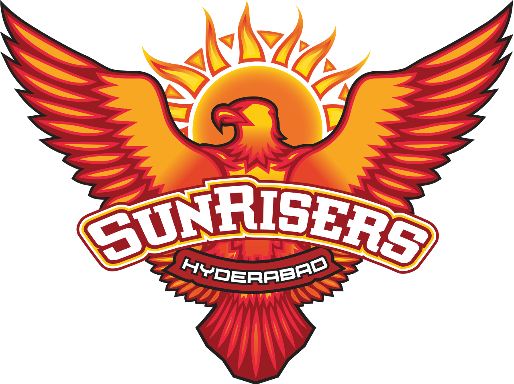

|  | |
| Captain | Kane Williamson |
|---|---|
| Coach | Trevor Bayliss |
| Ground | RGIC Stadium |
The Sunrisers Hyderabad (stylised as SunRisers Hyderabad, abbr. SRH) are a franchise cricket team based in Hyderabad, Telangana, India, that plays in the Indian Premier League (IPL).[3] The franchise is owned by Kalanithi Maran of the SUN Group and was founded in 2012 after the Hyderabad-based Deccan Chargers were terminated by the IPL.[4] The team is currently captained by Kane Williamson and coached by Trevor Bayliss.[5] Their primary home ground is the Rajiv Gandhi International Cricket Stadium, Hyderabad, which has capacity of 55,000